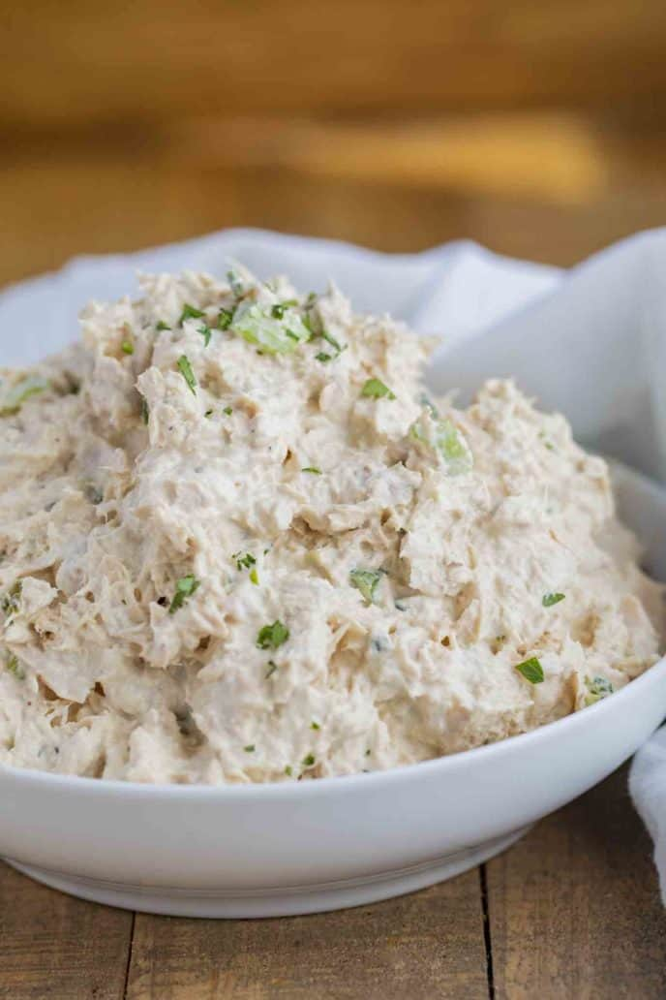

Tuna Salad

Tuna Salad is one of my favorties, ever since I was a kid. It is cheap, easy, and, most importantly, delicious.
Since it only requires a few basic ingredients, anyone can make it. But it is also very easy to add a little personal taste to it. I personally like really spicy foods and usually add peppers and spices to my tuna salad. That is what will be in this recipe.
Ingredients
- 2 cans of chunk white tuna
- 2 tablespoons mayo
- 2 tablespoons sweet pickle relish
- 1 jalepeno pepper
- salt
- pepper
- cajun seasoning
- garlic powder
- onion powder
Steps
- 1. Open tuna cans and drain the water.
- 2. Add tuna, mayo, and relish in medium sized mixing bowl
- 3. Sit bowl in fridge to chill while you cut the jalepeno.
- 4. Remove bowl, add in jalepeno and season to preference.
- 5. Enjoy with crackers or toast some bread and make a sandwhich.